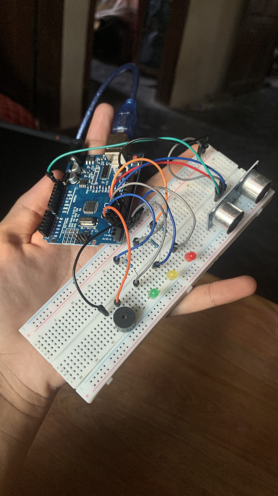

Panduan DIY: Sistem Radar Ultrasonik & Indikator Bahaya Berbasis Arduino Uno
Pelajari cara membuat sistem deteksi jarak dan alarm bahaya menggunakan sensor ultrasonik HC-SR04, indikator LED 3 warna (Hijau, Kuning, Merah), dan Buzzer peringatan otomatis.

Rangkaian hardware sistem radar ultrasonik dan modul indikator bahaya yang sudah terpasang.
Konsep & Cara Kerja Sistem
Sistem radar sederhana ini menggunakan Arduino Uno sebagai pengolah data utama. Sensor ultrasonik HC-SR04 bekerja mirip seperti sistem sonar pada kapal selam atau kelelawar:
Pin Trig memancarkan gelombang ultrasonik frekuensi 40kHz ke arah depan.
Gelombang memantul saat menabrak objek dan diterima pin Echo untuk dihitung durasinya.
Arduino mengonversi waktu menjadi jarak (cm) dan menyalakan LED & Buzzer sesuai batas jarak.
Tingkatan Status Deteksi Jarak:
Alat & Bahan yang Dibutuhkan
Skema Wiring / Pinout Arduino
| Nama Komponen | Pin / Kaki Komponen | Jalur Sambungan ke Arduino |
|---|---|---|
| HC-SR04 | VCC | 5V |
| GND | GND | |
| Trig | Pin D9 | |
| Echo | Pin D8 | |
| LED Hijau | Anoda (+) | Pin D2 (Lewat Resistor 220Ω) |
| Katoda (-) | GND | |
| LED Kuning | Anoda (+) | Pin D3 (Lewat Resistor 220Ω) |
| Katoda (-) | GND | |
| LED Merah | Anoda (+) | Pin D4 (Lewat Resistor 220Ω) |
| Katoda (-) | GND | |
| Buzzer | Positif (+) | Pin D5 |
| Negatif (-) | GND |
Arduino Source Code (C++)
// =======================================================
// PROYEK: SISTEM RADAR ULTRASONIK & INDIKATOR BAHAYA
// CREATED BY: @ekadevs
// TARGET BOARD: Arduino Uno
// =======================================================
const int trigPin = 9;
const int echoPin = 8;
const int ledHijau = 2;
const int ledKuning = 3;
const int ledMerah = 4;
const int buzzer = 5;
long duration;
int distance;
void setup() {
// Inisialisasi Mode Pin
pinMode(trigPin, OUTPUT);
pinMode(echoPin, INPUT);
pinMode(ledHijau, OUTPUT);
pinMode(ledKuning, OUTPUT);
pinMode(ledMerah, OUTPUT);
pinMode(buzzer, OUTPUT);
// Inisialisasi Serial Monitor buat Debugging
Serial.begin(9600);
}
void loop() {
// Bersihkan trigPin
digitalWrite(trigPin, LOW);
delayMicroseconds(2);
// Pancarkan gelombang ultrasonik selama 10 mikrodetik
digitalWrite(trigPin, HIGH);
delayMicroseconds(10);
digitalWrite(trigPin, LOW);
// Hitung waktu pantulan gelombang (mikrodetik)
duration = pulseIn(echoPin, HIGH);
// Rumus Menghitung Jarak dalam Centimeter (cm)
// Jarak = (Durasi * Kecepatan Suara 0.034 cm/us) / 2
distance = duration * 0.034 / 2;
// Tampilkan jarak di Serial Monitor
Serial.print("Jarak Objek: ");
Serial.print(distance);
Serial.println(" cm");
// Logika Indikator Status Bahaya
if (distance > 20) {
// STATUS 1: AMAN (Objek Jauh > 20 cm)
digitalWrite(ledHijau, HIGH);
digitalWrite(ledKuning, LOW);
digitalWrite(ledMerah, LOW);
noTone(buzzer); // Buzzer mati
}
else if (distance >= 10 && distance <= 20) {
// STATUS 2: WASPADA (Objek Sedang 10 - 20 cm)
digitalWrite(ledHijau, LOW);
digitalWrite(ledKuning, HIGH);
digitalWrite(ledMerah, LOW);
// Buzzer Beep Interval
tone(buzzer, 1000);
delay(150);
noTone(buzzer);
}
else if (distance < 10 && distance > 0) {
// STATUS 3: BAHAYA (Objek Sangat Dekat < 10 cm)
digitalWrite(ledHijau, LOW);
digitalWrite(ledKuning, LOW);
digitalWrite(ledMerah, HIGH);
// Buzzer Bunyi Nyaring Kontinyu
tone(buzzer, 2000);
}
delay(100); // Delay pembacaan berkala
}Cara Upload ke Arduino
- Buka software Arduino IDE di laptop/komputer kamu.
- Klik tombol Copy Code di atas dan tempelkan (paste) ke editor Arduino IDE.
- Hubungkan board Arduino Uno menggunakan kabel USB Type-A to B.
- Pilih Board:
Tools ➔ Board ➔ Arduino AVR Boards ➔ Arduino Uno. - Pilih Port USB yang terhubung:
Tools ➔ Port ➔ (Pilih COM Port Arduino). - Klik tombol Upload (ikon tanda panah ke kanan ).
- Buka Serial Monitor (Ctrl + Shift + M) dengan baudrate
9600untuk mengecek data jarak secara real-time.